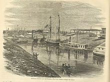

The Suez Canal: History
Beginnings
In 1854 and 1856, Ferdinand de Lesseps obtained a concession from Sa'id Pasha, the Khedive of Egypt and Sudan, to create a company to construct a canal open to ships of all nations. The company was to operate the canal for 99 years from its opening. The Suez Canal Company (Compagnie universelle du canal maritime de Suez) came into being on 15 December 1858 and work started on the shore of the future Port Said on 25 April 1859.
Construction
The excavation took some 10 years using forced labour (corvée) of Egyptian workers. Some sources estimate that over 30,000 people were working on the canal at any given period, that more than 1.5 million people from various countries were employed, and that thousands of labourers died.[
Opening
The canal opened under French control on 17 November 1869. Although numerous technical, political, and financial problems had been overcome, the final cost was more than double the original estimate. The opening was performed by Khedive Isma'il Pasha of Egypt and Sudan, and at Ismail's invitation French Empress Eugenie in the Imperial yacht Aigle piloted by Napoléon Coste, who was bestowed by the Khedive the Ottoman Order of the Medjidie. The first ship through the canal was the British P&O liner Delta.